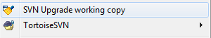
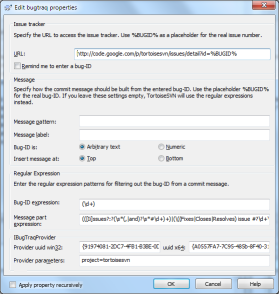
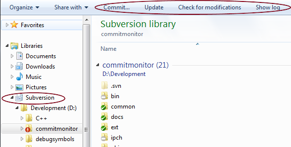
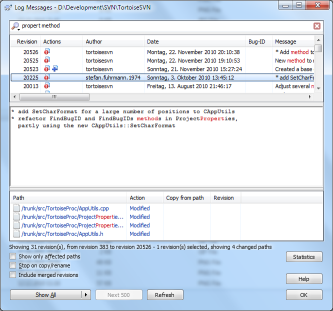
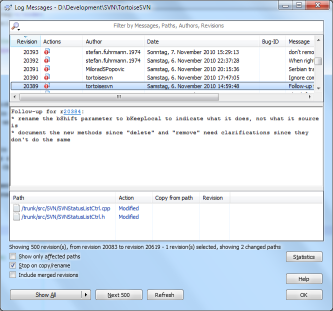
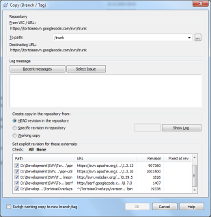
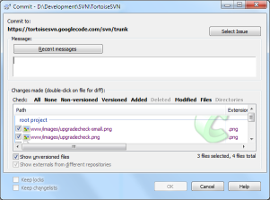
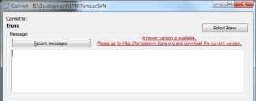
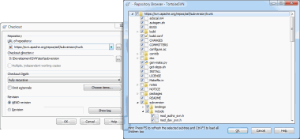

What's New in TortoiseSVN 1.7
TortoiseSVN 1.7 is a superset of all previous TortoiseSVN releases,
and is considered the current stable and "best" release. Anything in earlier versions
is also in 1.7, but 1.7 contains features and
bugfixes not present in any earlier release.
TortoiseSVN 1.7 dropped support for Windows 2000. It requires
at least Windows XP with service pack 3 to work. If you're still
using Windows 2000 or Windows XP without service pack 3, you
either have to upgrade your OS or keep using TortoiseSVN 1.6.
This page describes only major changes. For a complete list
of changes, you can check our
commit logs.
$ADSENSE_INPAGE$
working copy metadata storage improvements
Subversion 1.7 features a complete re-write of the working copy
metadata management system of Subversion, code named WC-NG.
Centralized Metadata Storage
A key feature of the changes introduced in Subversion 1.7 is the
centralization of worky copy metadata storage into a single location.
Instead of a .svn directory in every directory in the working
copy, Subversion 1.7 working copies have just one .svn
directory—in the root of the working copy. This directory includes
(among other things) an SQLite-backed database which contains all of the
metadata Subversion needs for that working copy.
Even though the data is stored in a structured format, the relationships
between the data are complex. We highly discourage external tools from
modifying the data held in this database, as such modification is likely to
result in working copy corruption.
Upgrading the Working Copy
Subversion 1.7 introduces substantial changes to the working copy format.
In previous releases, Subversion would automatically update
the working copy to the new format when a write operation was performed.
Subversion 1.7, however, will make this a manual step.
Before you can use an existing working copy with TortoiseSVN 1.7, you
have to upgrade the format first. If you right-click on an old
working copy, TortoiseSVN only shows you one command in the
context menu: Upgrade working copy.

To be on the safe side, you should run a cleanup
with your pre-1.7 svn client on your working copies. Because
if the working copy is in an inconsistent state, the upgrade
process might fail. Best to run cleanup before upgrading
the svn client.
Once you've upgraded your working copies, older SVN clients
won't be able to access those working copies. So make sure
that you update all your SVN clients (in case you use not
just TortoiseSVN).
x64 Installer
In previous releases, users who installed TortoiseSVN on an
x64 OS also had to separately install the 32-bit version of
TortoiseSVN to get its features for 32-bit applications too.
TortoiseSVN 1.7 includes the required 32-bit parts in its
x64 installers. There's no need to install the 32-bit version
of TortoiseSVN on x64 OS.
Property dialogs
Handling SVN properties is now much easier. Most of the
properties you want or need to set on your working copies
can now be set and modified without knowing the exact format.
TortoiseSVN 1.7 provides custom dialogs for most of the known
properties.

The above screenshots show the new property dialogs for
the svn:externals and all the bugtraq:
properties. There are more custom property dialogs available
in TortoiseSVN 1.7. Please have a look at the
docs
to find out about all of them.
Windows 7 Library
The explorer in Windows 7 introduced libraries, which are
containers for files and folders that have something in common.
TortoiseSVN 1.7 creates a new library type for SVN working
copies.

If you put the root folder of your working copies in that new
library folder, you get four buttons at the top of the explorer
which execute the most used commands: Commit, Update, Check for
modifications and Show log.
This saves you from using the right-click context menu for
these often used commands and really saves a lot of mouse clicks.
Log dialog
The log dialog doesn't look much different. But in its core
it gained a lot of changes. Most noticable may be the increase
in performance. Showing and filtering hundred thousand entries
is now done almost instantly.
Filtering also has improved a lot. Especially the syntax now
resembles more what users are used to from web search engines.
For example, filtering for Alice Bob -Eve will
show strings containing both Alice and Bob but not Eve. For more
detailed examples, please refer to the
docs.
Another feature the log dialog has is that it highlights
filter matches in red. That way it's much easier to find out
which part of a log entry matched the filter string.

If revisions are mentioned in a log message, then the log
dialog turns those into links. Clicking on those links will
automatically select the mentioned revision in the log dialog.

Revision graph
The revision graph also got a lot of improvements. Escpecially
the startup time has been reduced a lot, which will be most
noticable for very big repositories.
Since revision graphs can get very big, saving them as bitmap
images can lead to very big images. While it was possible to
save the graph as a wmf file,
that format can only be used on Windows. And of course, you can't
show it in a web browser.
The revision graph in version 1.7 can save the graph in
the svg format.
Most web browsers can show that format natively, and even Internet
Explorer in its latest version is able to show those files directly.
If your browser supports this format, you can have a look
at the TortoiseSVN revision graph following this link.
Branch/Tag dialog
When creating a branch or tag, the svn:externals
properties are branched/tagged as they are, usually pointing
to the HEAD revision of another repository or even the same
repository but different path.
If the svn:externals are not tagged too,
a later checkout from the created tag would fetch the HEAD
revision of the external, which can lead to inconsistent builds
if the external got additional commits.
The branch/tag dialog now allows you to tag the
externals too.

If externals are set to an explicit revision when creating
a branch or tag, TortoiseSVN automatically changes the
svn:externals property. When the branch/tag is
created from HEAD or a specific revision in the repository,
TortoiseSVN first creates the branch/tag, then adjusts the
properties. This will create additional commits for each
property. When the branch/tag is created from the working copy,
the properties are modified first, then the branch/tag is
created and then the properties are changed back to their
original value.
Commit dialog
The commit dialog got a few UI changes as well. The first
thing you'll notice are the new link labels just above the
list with the items to commit. These links are used to check
or uncheck specific items. With those link labels, that task
is much easier to accomplish than with the checkboxes that were
used in earlier versions.

The commit dialog now also shows a notification if there
are updates for TortoiseSVN available, i.e., if you don't have
the latest version installed. This replaces the separate dialog
that popped up in previous versions since many users got annoyed
by that pop up dialog.

Repository browser
The repository browser shows folders that are included with
the svn:externals property. It's also possible to
browse to those folders, even if they are located in different
repositories. The external folders are marked with a red arrow
to distinguish them from normal folders in the repository.

It's now also possible to edit a file directly from the
repository browser. This makes it easy to make quick changes
to a file without having to check out a whole working copy.
Starting up the repository browser and browsing itself
also got a lot faster in 1.7 due to heavy caching and pre-fetching
information in the background.
Sparse checkouts
If you only need a working copy that has only a few folders
of the project, you have to do a so called sparse checkout.
In previous versions this was done in multiple steps by first
checking out the parent folder with depth empty, then updating
the folders you want one by one with the required depth.
Now this is much easier: in the checkout dialog there's
a button choose items... which opens a new dialog
where you can easily check the folders and files you want and
uncheck those you do not need.

After everything is selected, the checkout will take care
of the rest and you'll end up with the sparse working copy
you want - all in one easy step.
TortoiseMerge
TortoiseMerge gained a few often requested features:
- hiding of unchanged sections
- Sections which do not contain any differences can be
hidden so that only the changes are visible. This helps
to get a better overview of the changes without too much
scrolling.
- splitting of long lines
- overly long lines are hard to view since they require
a lot of sideways scrolling. A new option allows to split
those lines into multiple lines when viewing so no
side-scrolling is necessary anymore.
- marking of words
- a doubleclick on a word/variable/statement/... marks
that word throughout the whole document. And the view bar
on the left also indicates where the same word/variable/statement
in the document can be found. This allows for a much easier
review of changes.
Compatibility concerns
Older clients and servers interoperate transparently with 1.7
servers and clients. However, some of the new 1.7 features may
not be available unless both client and server are the latest
version. There are also cases where a new feature will work
but will run less efficiently if the client is new and the
server old.
New Feature Compatibility Table
| New Feature |
Minimum Client1 |
Minimum Server |
Minimum Repository |
Notes |
| HTTPv2 |
1.7 |
1.7 |
any |
Permutations of older client/server combinations will continue to
function at the pre-1.7 feature level. |
| WC-NG |
1.7 |
any |
any |
1.6 working copies cannot be used with 1.7 and will
not be upgraded to the new 1.7 format
automatically. |
1Reminder: when using the file://
repository access method, the Subversion program is both the client
and the server. |

{kind=link}
{kind=link}
{kind=link}
{kind=link}
{kind=link}
{kind=link}
{kind=link}
{kind=link}
{kind=link}